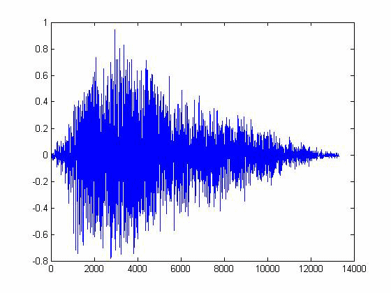
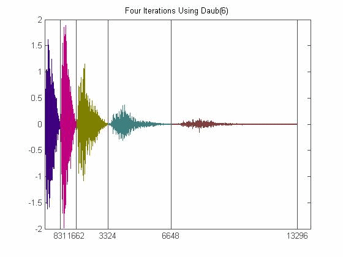
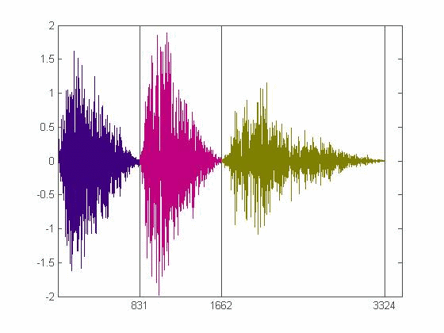
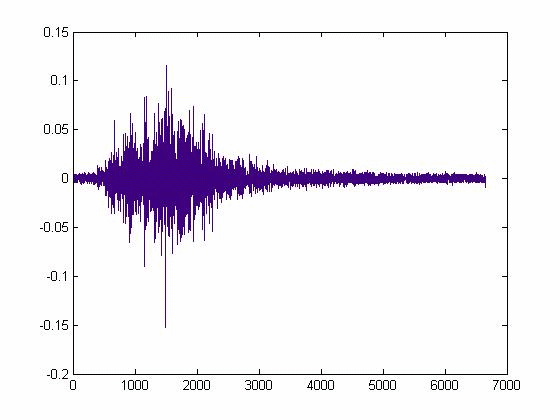
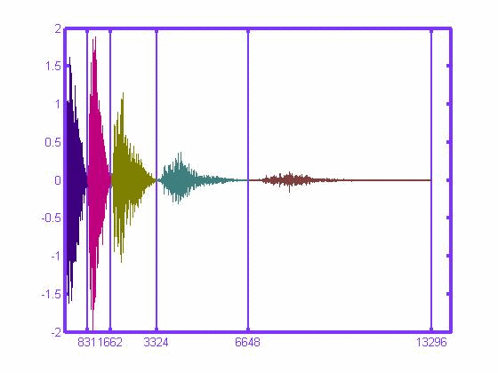
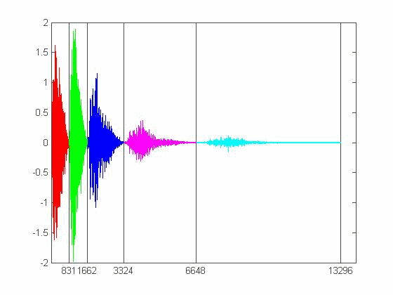
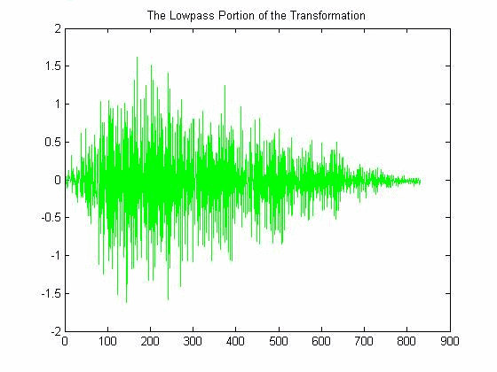

| DiscreteWavelets Toolbox |
Plot a one-dimensional wavelet transfomration
WaveletVectorPlot(wt,its)
WaveletVectorPlot(wt,its,options)
WaveletVectorPlot(wt,its) takes a vector wt, presumably obtained by computing the wavelet transformation of some vector, and a number of iterations its, and plots wt with each portion of the transformation separated by grid lines and illustrated with a different color.
WaveletVectorPlot(wt,its,options) allows the user to set several parameters. See Optional Arguments for more details.
There are eight optional arguments that can be set for WaveletVectorPlot. The order of the parameters does not matter in the function call, but you must follow the standard convention 'Option', 'Value' when invoking the parameters.
'Region' can be set to either 'All' (default), 'LowPass', or 'HighPass'. In the last case, the routine looks for the value of 'Iteration' (see below) and then plots the selected portion of wt.
'Iteration' can be set to 'All' (default) or any positive integer 1,2,...,its. This value is used if 'Region' has been set to 'HighPass' to plot that particular region. If 'Region' is set to 'All' and 'Iteration' is set to i, then the routine plots the lowpass portion and highpass portions k=i,...,its.
'DivideLines' can be set to 'True' (default) or 'False' in order to show or hide, respectively, gridlines dividing the different portions of the transformation.
'DivideLinesColor' is a length three vector whose entries are in the interval [0,1] that serves as the color of the gridlines. The default color of 'DivideLinesColor' is [.3 .3 .3] (dark gray).
'DivideLinesThickness' can be set to a nonnegative integer (default is 1) that tells the routine how thick to make the gridlines that separate the different portions of the transformation.
The 'UseColors' parameter is set to either 'True' (default) to show the different portions of the transformation with different color. Setting the parameter to 'False' to use the default color of blue for the entire plot.
If 'UseColors' has been set to 'True', the function looks for values in 'ColorList'. This input must be an n x 3 matrix whose entries are numbers in the interval [0,1]. If n < its+1, then the n x 3 matrix is augmented with enough rows so that the number of rows is >=its+1. In this way, the routine has enough colors to plot each portion of the transformation. A default color list (6 colors) is provided with the routine.
A plot title can be added using the 'Title' option. For example, WaveletVectorPlot(wt,its,'Title','Here is a Picture') adds a title to the plot.
First, we create a vector and compute four iterations of its wavelet transformation. Different examples will illustrate the different parameters that can be set with WaveletVectorPlot.
snd=AudioNames(); %Get all audio files included with the toolbox
v=wavread(snd{2}); %Read an audio file
v=ChopVector(v,4); %Make sure the length is divisible by 16
plot(v); %Plot the vector
wt=WT1D(v,Daub(6),4); %Compute four iterations of the transformation

WaveletVectorPlot(wt,4,'Title','Four Iterations Using Daub(6)');
Plot only iterations 3 and 4:
WaveletVectorPlot(wt,4,'Region','All','Iteration',3);
Plot the highpass portion of iteration 1
WaveletVectorPlot(wt,4,'Region','HighPass','Iteration',1);
Change the divide lines color and thickness
WaveletVectorPlot(wt,4,'DivideLinesColor',[.5 .2 1],'DivideLinesThickness',3);
Provide your own colors.
WaveletVectorPlot(wt,4,'ColorList',[1 0 0; 0 1 0; 0 0 1; 1 0 1; 0 1 1; 1 1 0]);
Plot the lowpass portion in green and provide a title.
WaveletVectorPlot(wt,4,'ColorList',[0 1 0],'Region','LowPass','Title','The Lowpass Portion');
BWT1D, HWT1D, LWT1D, WT1D, WaveletDensityPlot
© 2007-2008 Patrick Van Fleet